This page is about my final project from 15-694: Cognitive Robotics course at Carnegie Mellon University Computer Science Department that I took in Spring 2020 semester. The main goal of the project is to give the Cozmo robot an ability to detect the partial cube in his vision by using a deep learning, then turn to its direction so that Cozmo can see the full cube in its vision.
At this project, I have used the Cozmo. Details of 'How does the Cozmo work?' can be found at here. Base code that operates the Cozmo for this project and this course can be found at here.
I use the OpenCV when I handle images
For the training and testing the partial cube detection, I used the PyTorch.
Even though the Professor Touretzky suggested collecting the image data by Cozmo's camera with his TakePictures.fsm code, I decided to collect the data by my smartphone (iPhone 7+) since placing Cozmo, checking his vision at computer, then taking picture requires much more labor and time than needed. However, data collected by Cozmo can be more exquisite, and more helpful for making better neural network. If time permits, I will try to collect the data by Cozmo, then compare the performance.
All raw images, taken from the smart-phone, have 4032 pixels width, and 3024 pixels height. Thus, the aspect ratio of all raw images is 4 : 3.
These are some of my raw images with cubes.
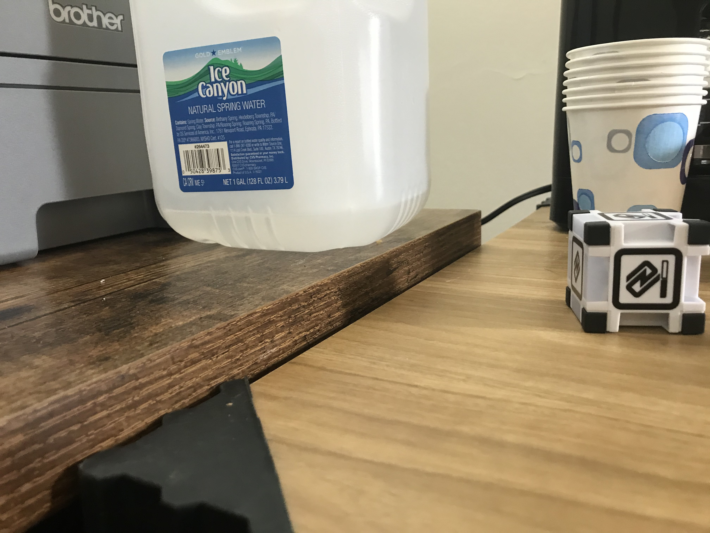
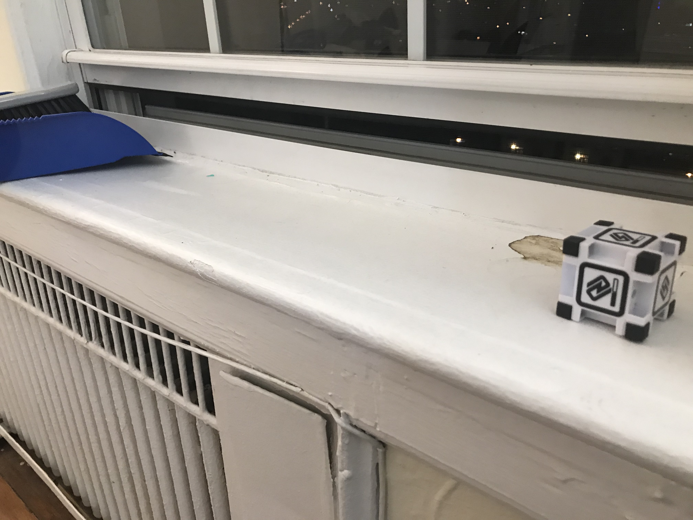
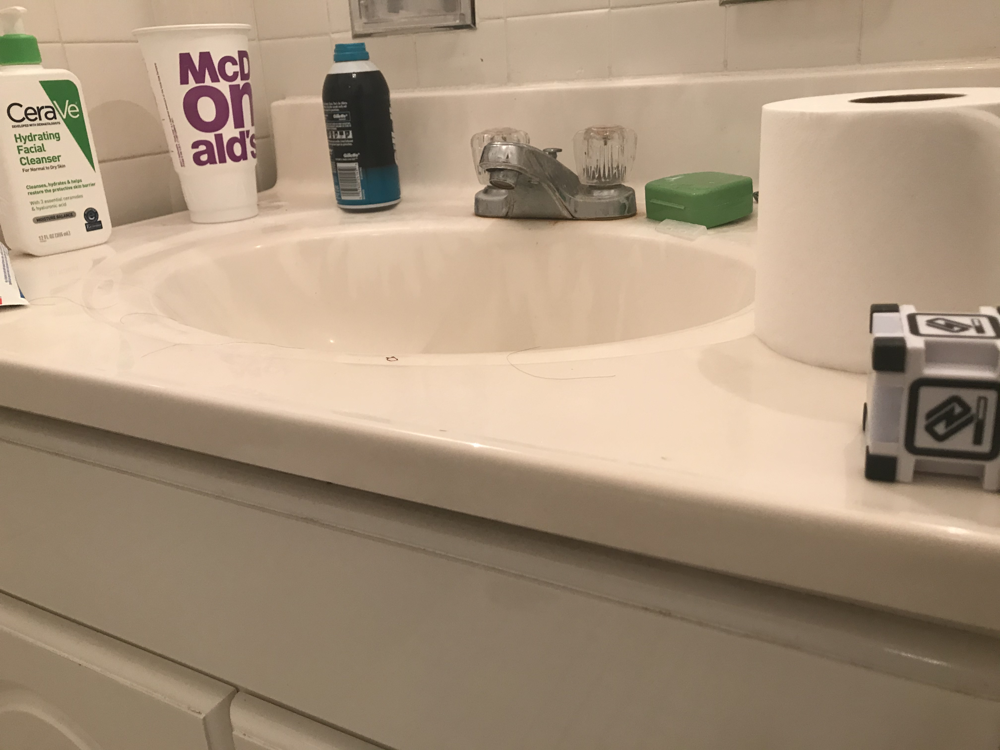
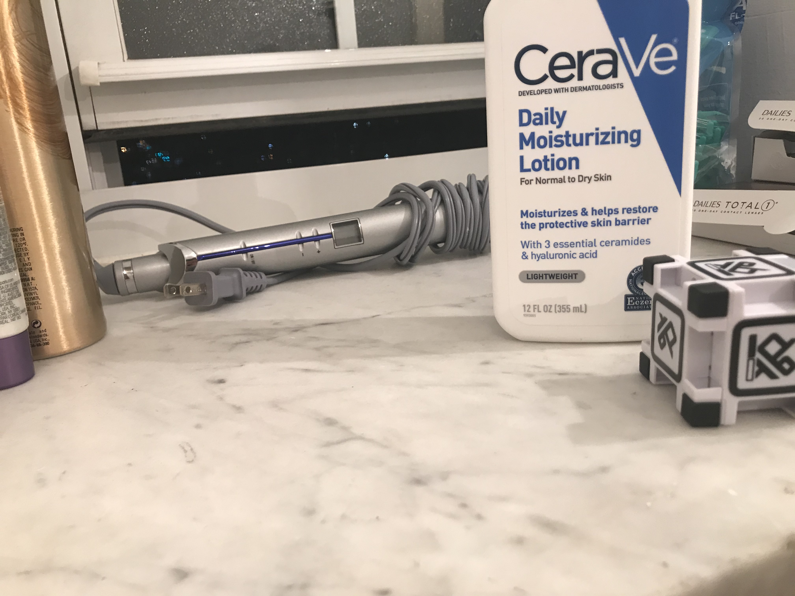
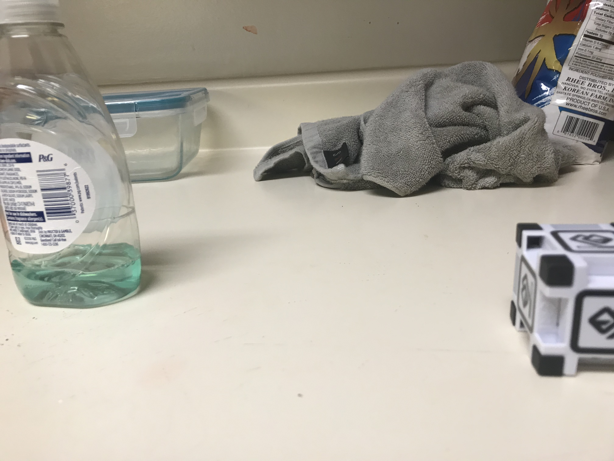
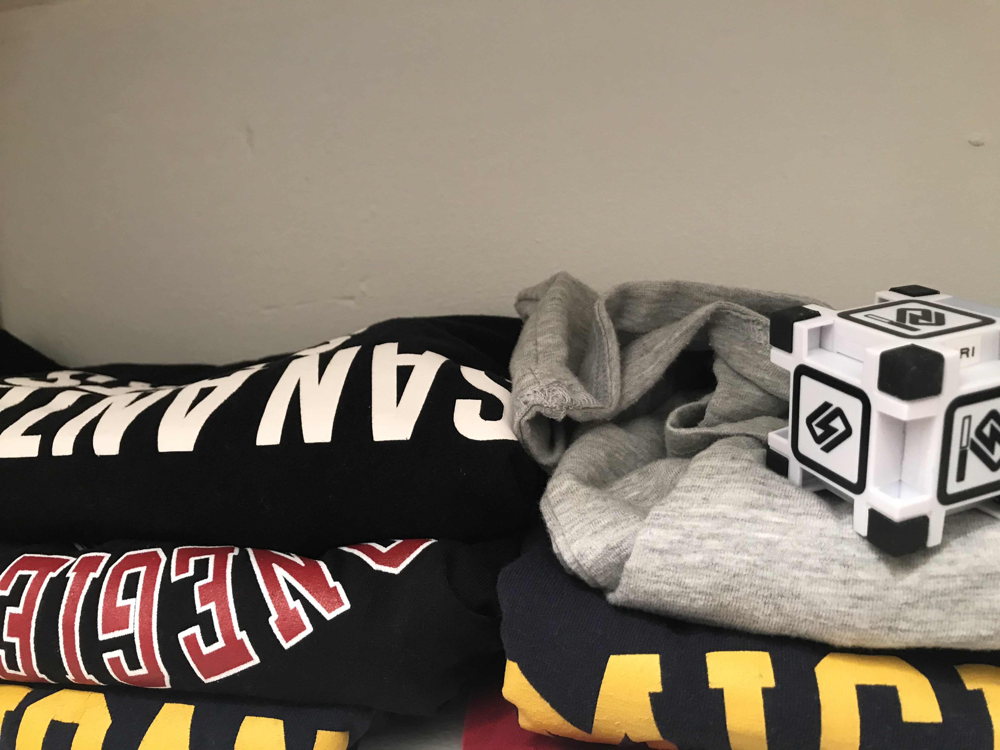
These are some of my raw images with no cube.
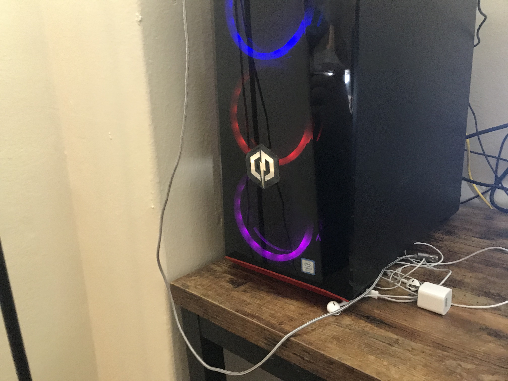
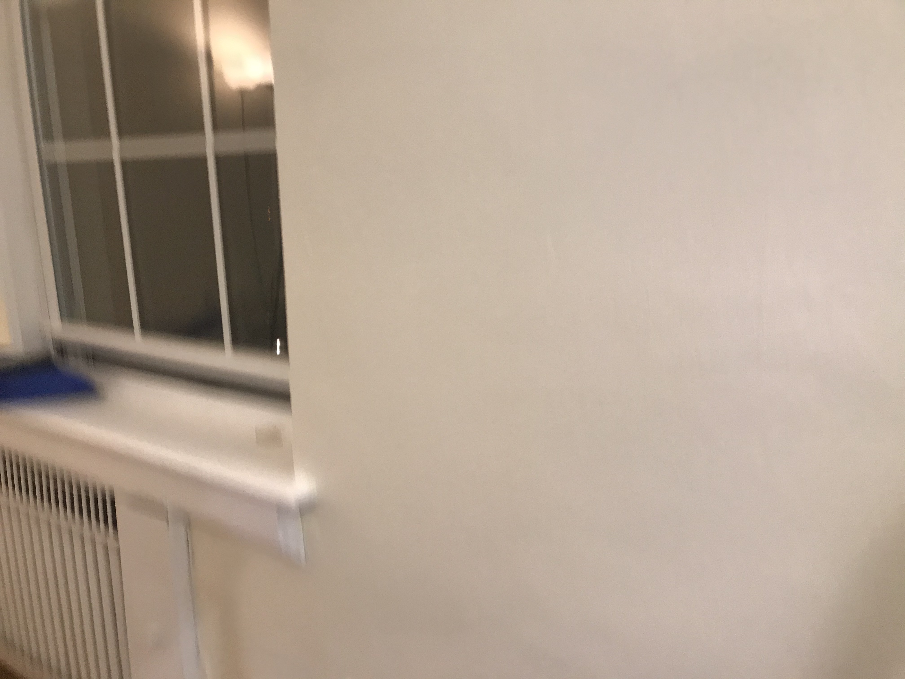
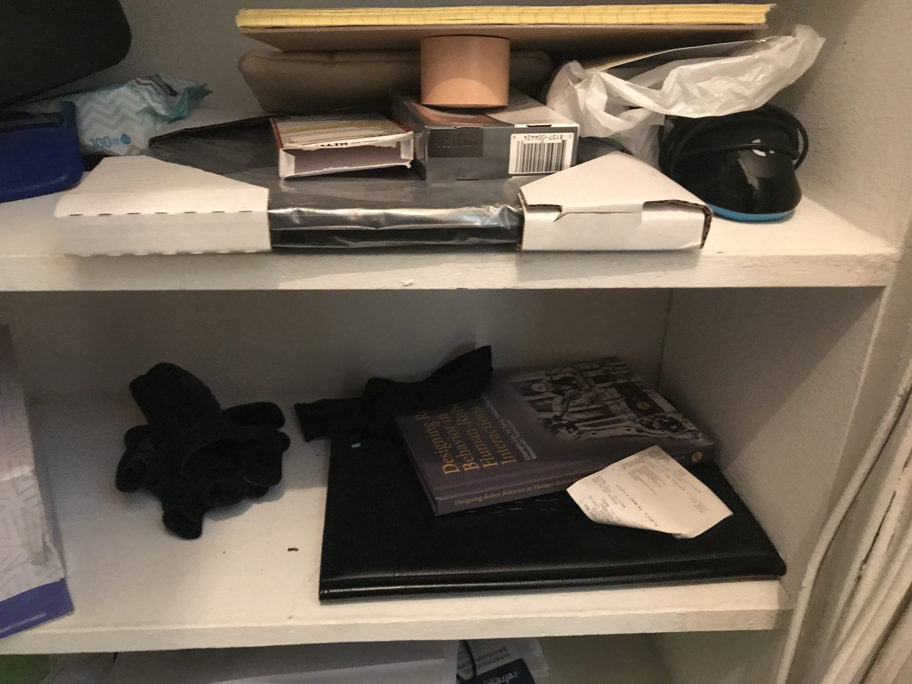
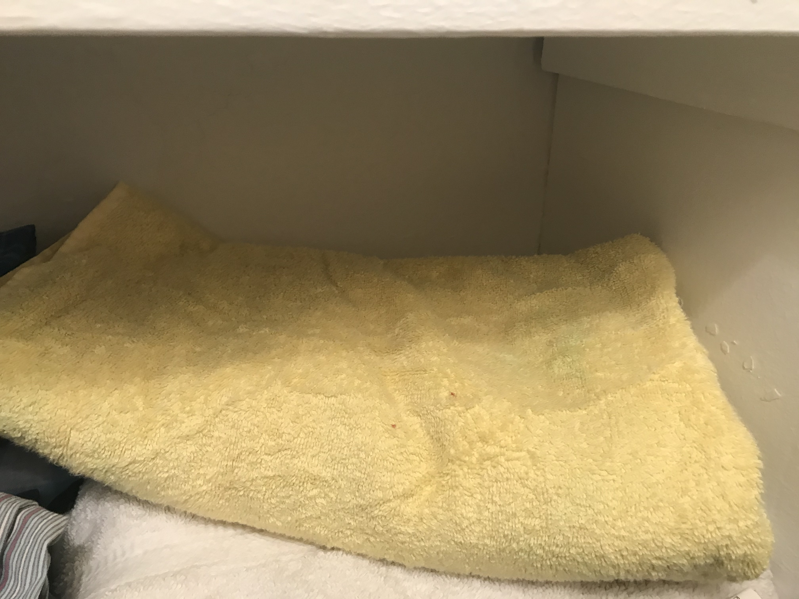
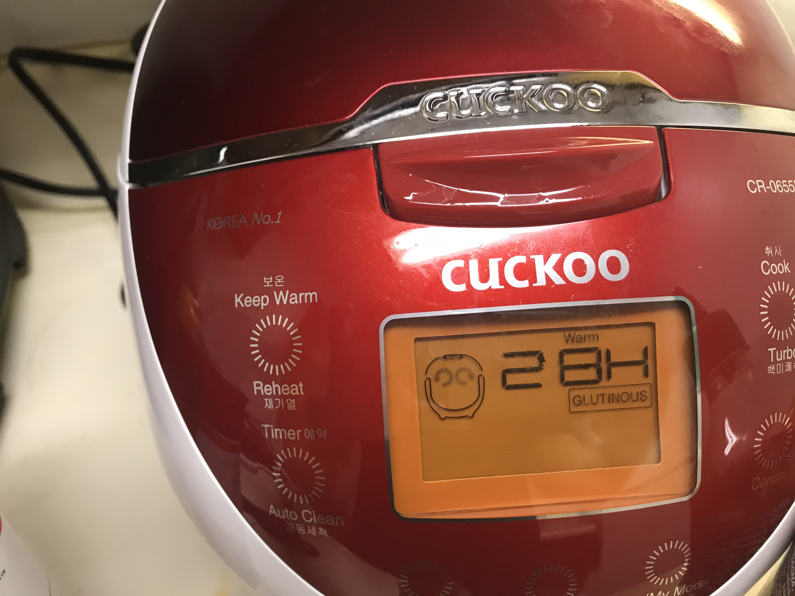
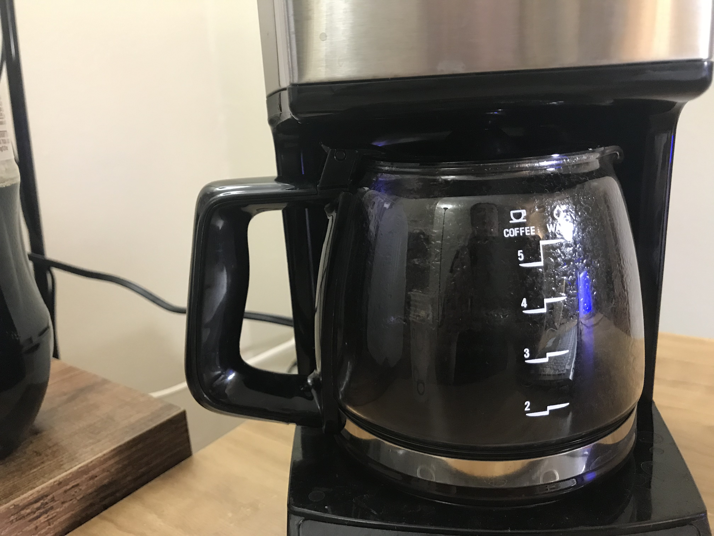
As I mentioned above, these images are taken by smart-phone camera instead of the Cozmo's camera. At testing, images directly taken from the Cozmo's camera will be an input image of the neural network. Thus, it is necessary to make our training images similar to image taken from the Cozmo.
This is how Cozmo sees the world with his camera. The width of the image is 320 pixels, and height of the image is 240 pixels. Thus, the aspect ratio is 4 : 3. Also, the image is in grayscale.
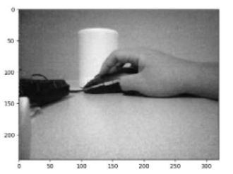
Fortunately, images from the Cozmo's camera has same aspect ratio as images from the smartphone. Thus, we only need to resize the image (divide both width and height with 12.6), then change RGB colors into grayscale.
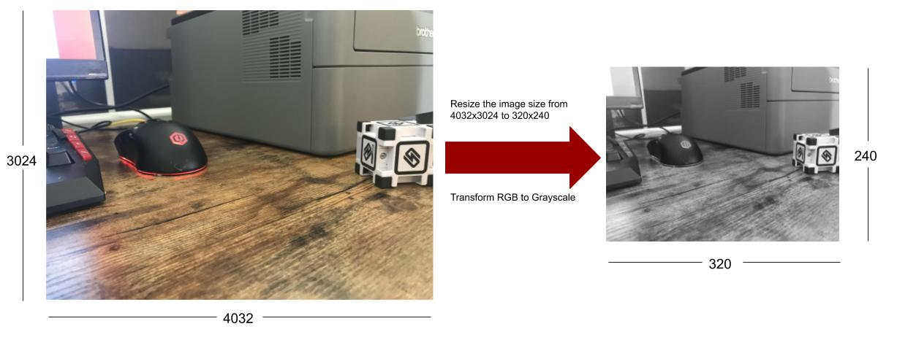
As introduced in Section 1, and Project Instruction, our final goal is 1) to make the Cozmo to find the partial cube, then 2) turn to the direction where partial cube exists (left or right) so that the Cozmo can see the full cube at the end. To achieve this, all images (320 width x 240 height) in the training set should be labeled as left, right, or No Cube. However, we can simplify the problem by setting up one essential rule when collecting the data, and using the flip function in the OpenCV.
1. When collecting the data (taking a picture), always locate partial/full cube at right half side.
2. After editing process (Section 3.2), cut each image (320 width x 240 height) data into half (two 160 width x 240 height). Then left half of the image will be an 160 x 240 image with no cube, and right half of the image will be an 160 x 240 iamge with partial/full cube.
3. Double each image by flipping it horizontally.
4. Now, there are two 160x240 images with no cube. Label these two images as "No cube exists (Class 0)". Also, there are two 160x240 images with partial/full cube. Label these two images as "Cube exists (Class 1)"
So, now number of labels decreases from 3 (Left, Right, No Cube) to 2 (Cube exist, No Cube exist). This makes our neural network task easier (because neural network just needs to decide whether cube exists in the image or not, and don't have to care whether partial cube is at the left side or right side.
Instead of simplifying the problem, we will let the Cozmo to figure out whether partial cube is at left side or at right side. More details will be at later section with Cozmo.
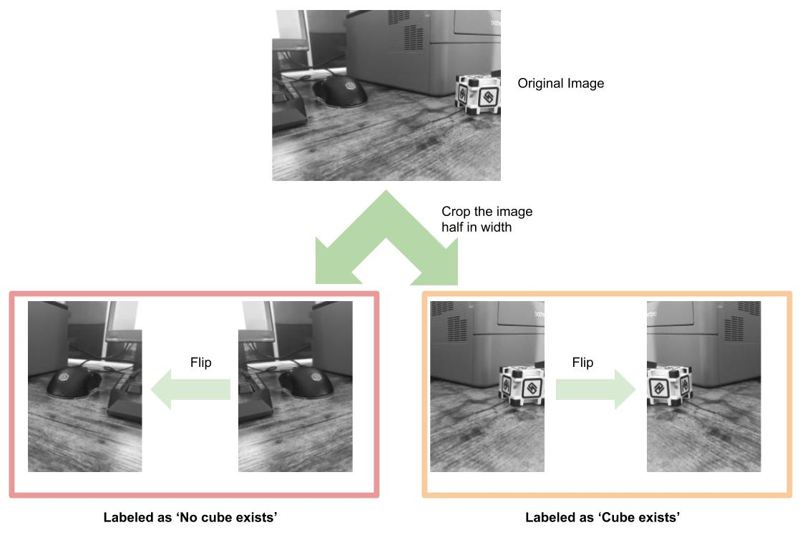In addition, when 320 width x 240 height image with no cube is provided, four 160 width x 240 height image datasets with 'No cube exists' label will be generated.